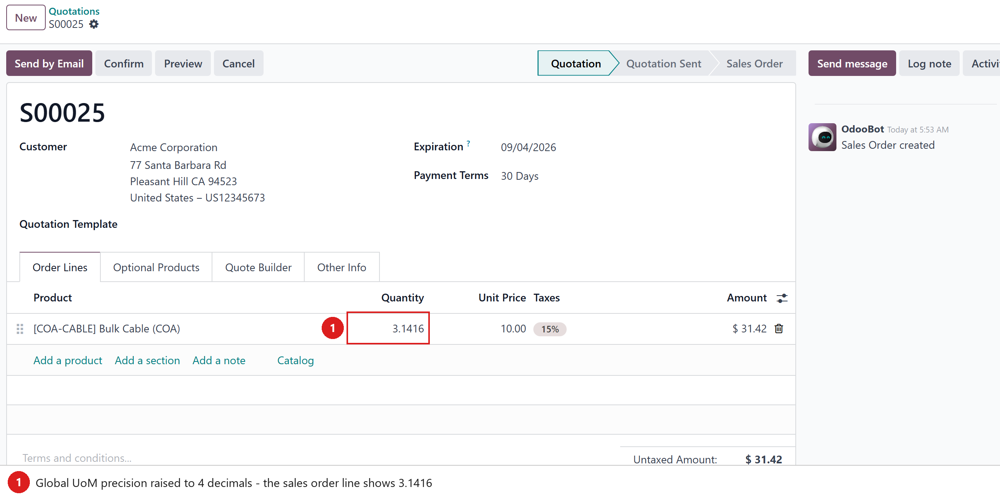
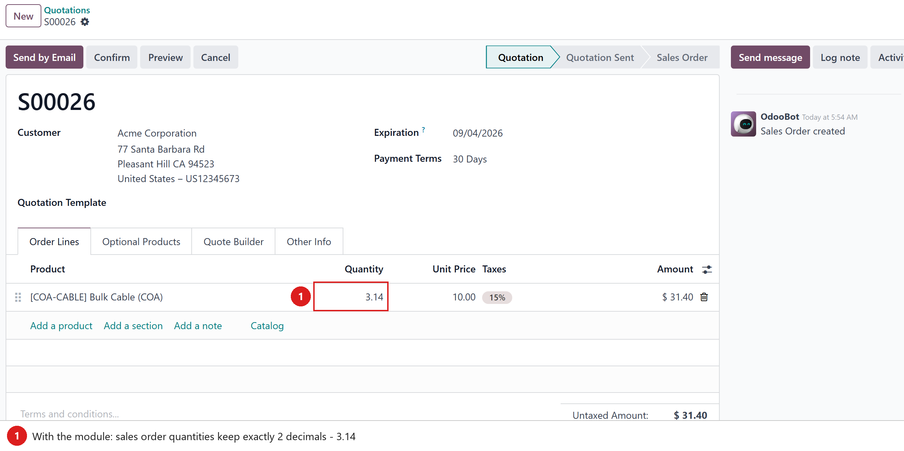
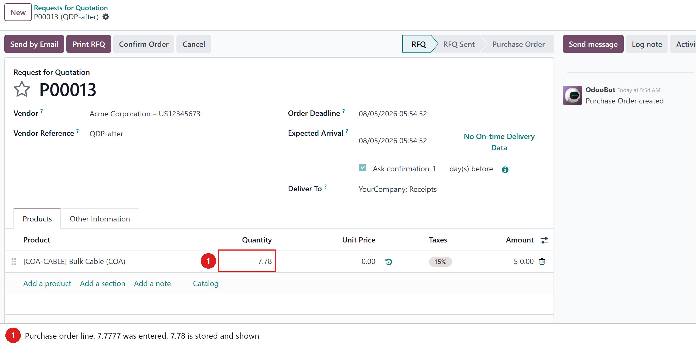
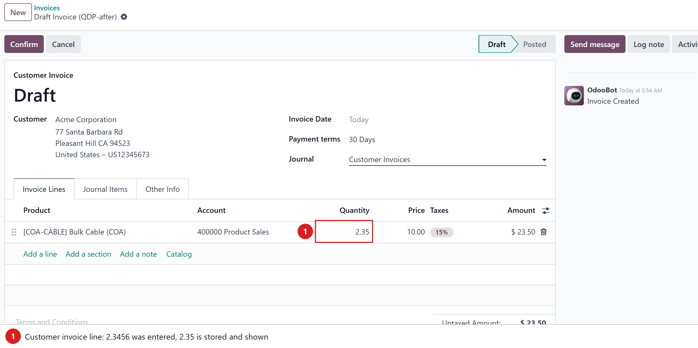

Keep quantities clean — 2 decimal places on sales orders, purchase orders and customer invoices, even when the global UoM precision is higher.
The decimal precision of Product Unit of Measure is global: raise it to 3–5 decimals
because inventory or manufacturing needs it, and suddenly every sales order, purchase order and
invoice shows quantities like 3.1416. Customers get quotes with four decimals,
and clerks type long fractions that were never intended on commercial documents.
This module pins the quantity fields of the commercial documents to 2 decimal places — entered values are rounded and stored with 2 decimals — while the rest of the system (stock moves, BoMs…) keeps using the global precision.
Here the global UoM precision is set to 4 decimals: the quotation line happily stores and displays 3.1416.

Same setup, module installed — quantities on the three commercial documents are rounded to 2 decimals the moment they are saved:



(16, 2):
sale.order.line.product_uom_qty, purchase.order.line.product_qty
and account.move.line.quantity — values are rounded by the ORM on save.
Tested on Odoo 17, 18 and 19 (Community and Enterprise).
Depends on the standard sale and purchase modules.